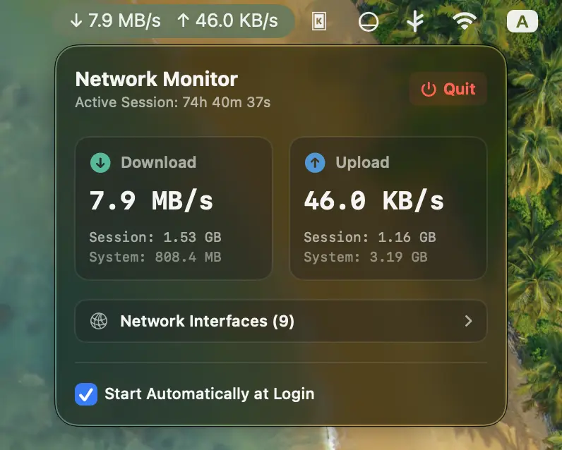

Monitor your connection with real-time clarity.
A lightweight menu bar utility built with SwiftUI that shows upload and download speeds at a glance and expands into a clean dashboard with transfer metrics and interface insights.
Minimal by design, detailed when you need it.
Built for everyday monitoring with real-time stats, near-zero CPU overhead, and a native macOS popover experience.
Live speeds
Monitor upload and download rates directly in the menu bar, refreshed every second for up-to-date visibility.
Popover dashboard
Open a clean popover dashboard for transfer cards, session statistics, lifetime counters, and active interface details.
Low overhead
Uses Darwin sysctl calls instead of shell-based polling, keeping CPU usage near zero while staying accurate.
Launch at login
Enable automatic startup from the dashboard with macOS app service APIs so monitoring is ready right away.
Native macOS appearance
Blends naturally into macOS with light and dark mode styling and native system material support.
SwiftPM structure
Organized as a clean Swift Package Manager build for straightforward development and contributions.
See the dashboard in action.
Take a closer look at the popover interface and transfer metrics.

Install the app from releases
Download the latest packaged macOS build from GitHub Releases and get up and running in seconds.
Open the releases page, choose the latest version, and download NetworkMonitor-macOS.zip.
Double-click the ZIP to extract it, then drag NetworkMonitor.app to your Applications folder.
If Gatekeeper blocks the first launch, follow the step below to allow the app.
Because the app is unsigned, macOS may warn that it cannot be opened. Click Done, then open System Settings > Privacy & Security and choose Open Anyway.
Build locally with Swift
Requires macOS 13.0 or later, Xcode 14.0 or newer, and Swift 5.7+.
git clone https://github.com/abzgif/mac-network-monitor.git cd mac-network-monitor chmod +x build.sh ./build.sh
open build/NetworkMonitor.app
If Gatekeeper blocks the app, open System Settings → Privacy & Security and allow it to run once.